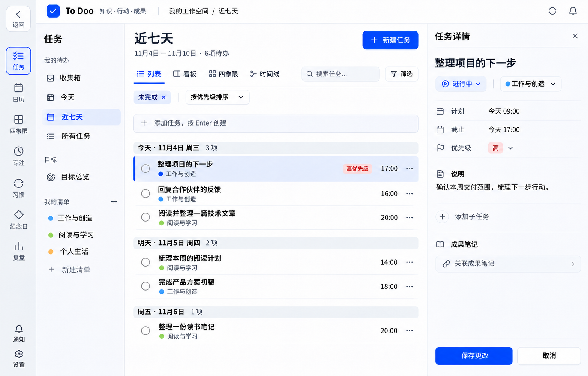

<!doctype html><html lang="zh-CN"><meta charset="utf-8"><meta name="viewport" content="width=device-width,initial-scale=1"><title>ToDoo 两级菜单结构修订</title><style>*{box-sizing:border-box}body{margin:0;background:#f5f7fa;color:#273346;font:15px/1.7 system-ui,"Microsoft YaHei",sans-serif}main{max-width:1568px;margin:auto;padding:28px 24px}h1{font-size:28px;margin:0 0 8px}p{color:#667389}nav{display:flex;flex-wrap:wrap;gap:16px;margin:18px 0}a{color:#4566c6}section{margin:26px 0;scroll-margin-top:20px}figure{margin:0;background:#fff;border:1px solid #dfe5ee;border-radius:8px;overflow:hidden}img{display:block;width:100%;height:auto}.menu img{width:min(100%,440px);margin:auto}figcaption{padding:10px 16px;color:#667389;border-top:1px solid #e6eaf1}h2{font-size:20px}@media(max-width:640px){main{padding:20px 12px}h1{font-size:24px}}</style><main><h1>ToDoo 两级菜单结构修订</h1><p>左侧窄模块栏＋右侧上下文导航；任务内容和详情沿用新布局。下面两张均为静态概念图。</p><nav><a href="#full">完整任务页</a><a href="#menu">菜单特写</a><a href="http://100.93.35.65:5181/">原内容布局图集</a><a href="README.md">说明与提示词</a></nav><section id="full"><h2>完整任务页 · 已有清单</h2><figure><a href="tasks-two-level-menu-v1.png" target="_blank" rel="noopener"></a><figcaption>任务模块与近七天分别处于各自层级的选中态。<a href="tasks-two-level-menu-v1.json">生成提示词</a></figcaption></figure></section><section id="menu"><h2>菜单特写 · 空清单状态</h2><figure class="menu"><a href="menu-empty-state-v1.png" target="_blank" rel="noopener"></a><figcaption>我的待办、目标、我的清单分组保持清晰；空清单显示创建第一张清单。<a href="menu-empty-state-v1.json">生成提示词</a></figcaption></figure></section></main></html>